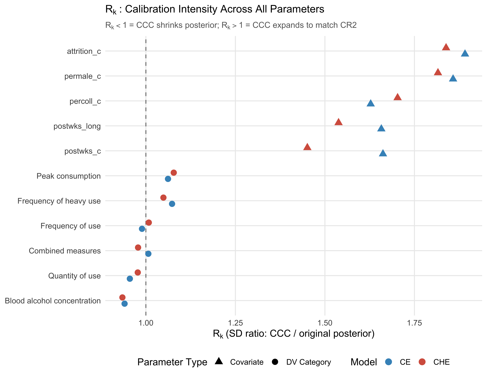
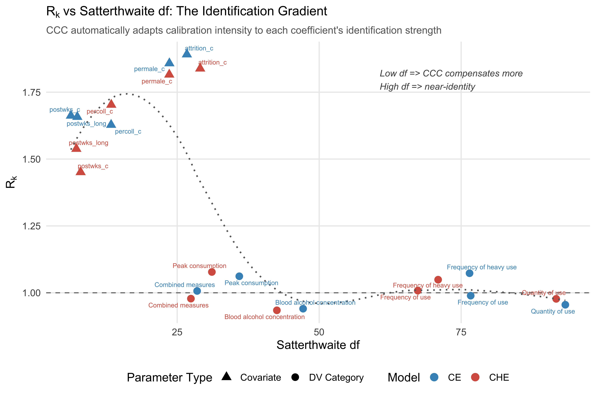
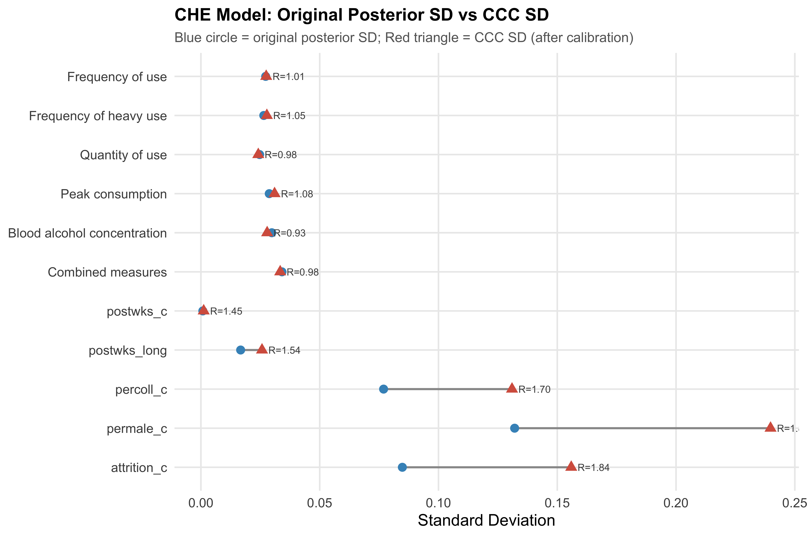
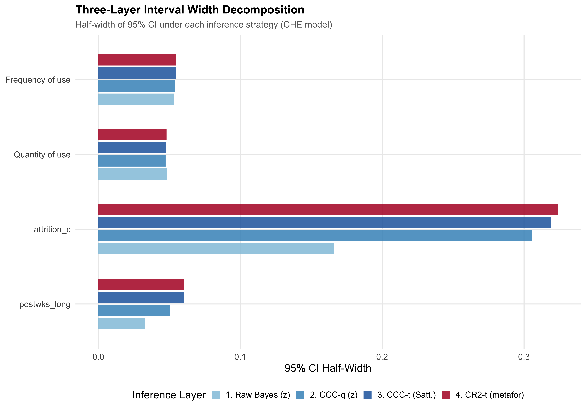
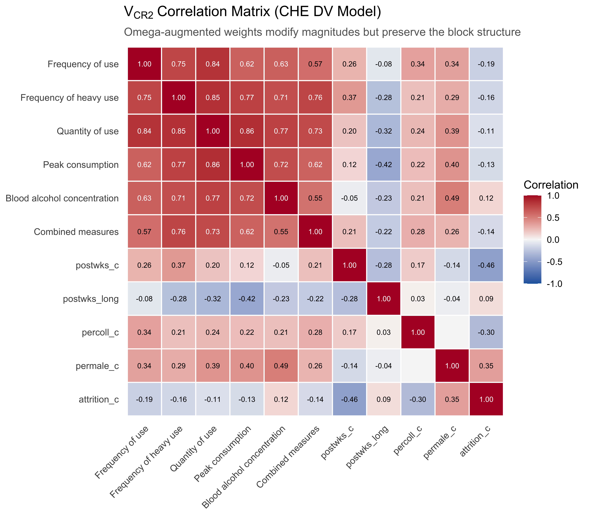
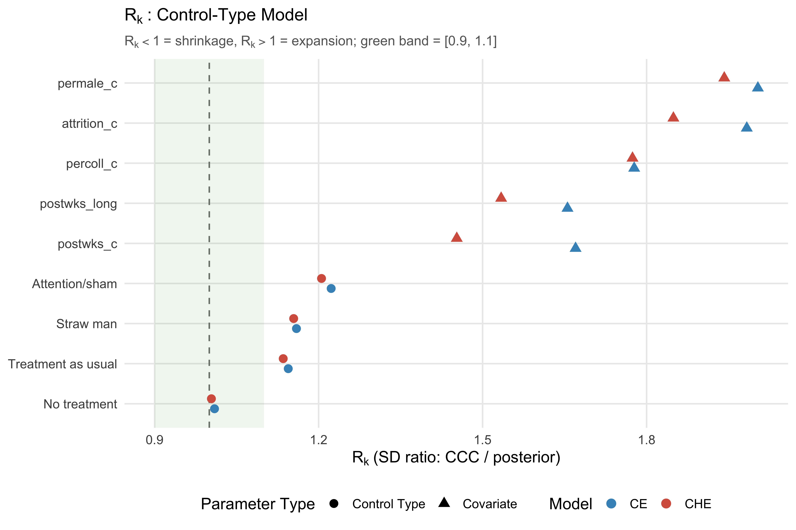

| DV | Est | SE | Est | SE | df | Est | SE | df | Est | CCC SD | df | R_k | Est | CCC SD | df | R_k |
|---|---|---|---|---|---|---|---|---|---|---|---|---|---|---|---|---|
| Frequency of use | 0.087 | 0.044 | 0.130 | 0.026 | 75.5 | 0.118 | 0.027 | 53.2 | 0.134 | 0.027 | 76.7 | 0.989 | 0.131 | 0.027 | 67.4 | 1.008 |
| Frequency of heavy use | 0.167 | 0.039 | 0.165 | 0.028 | 74.2 | 0.170 | 0.026 | 57.6 | 0.171 | 0.028 | 76.5 | 1.073 | 0.173 | 0.028 | 70.9 | 1.049 |
| Quantity of use | 0.169 | 0.027 | 0.153 | 0.024 | 81.6 | 0.151 | 0.023 | 75.6 | 0.159 | 0.024 | 93.3 | 0.955 | 0.158 | 0.024 | 91.7 | 0.977 |
| Peak consumption | 0.119 | 0.044 | 0.150 | 0.031 | 51.4 | 0.154 | 0.033 | 27.1 | 0.154 | 0.030 | 35.9 | 1.062 | 0.155 | 0.031 | 31.1 | 1.078 |
| Blood alcohol concentration | 0.167 | 0.034 | 0.180 | 0.028 | 61.1 | 0.181 | 0.029 | 38.9 | 0.184 | 0.028 | 47.2 | 0.941 | 0.183 | 0.028 | 42.6 | 0.934 |
| Combined measures | 0.114 | 0.063 | 0.155 | 0.032 | 40.9 | 0.160 | 0.036 | 24.3 | 0.159 | 0.032 | 28.5 | 1.007 | 0.163 | 0.033 | 27.4 | 0.978 |
15 CCC Mechanics and Limitations
16 CCC Mechanics: Deep Analysis
This chapter examines the internal mechanics of Cholesky Calibration Correction through six complementary lenses: cross-model estimator contrasts, the \(R_k\) calibration diagnostic, interval-width decomposition, the correlation structure of \(V_{\text{CR2}}\), the control-type supplementary specification, and an honest assessment of what the TSL15 analysis does and does not validate. All results are computed from the v0.6.0 real-data analysis of the Tanner-Smith & Lipsey (2015) dataset.
16.1 Five-Estimator Cross-Model Contrasts
The TSL15 dataset was analyzed under five estimation approaches: three frequentist (CE via robumeta, CE via metafor with CR2, CHE via metafor with CR2) and two Bayesian (bayesRVE CE with CCC-t, bayesRVE CHE with CCC-t). Comparing these estimators side by side isolates the contribution of each modeling decision.
16.1.1 DV Category Model: Full Five-Estimator Table
Table 16.1 presents the complete estimator comparison for the DV category moderator specification. Each row corresponds to one of six DV categories, with 17 columns spanning point estimates, standard errors, degrees of freedom, and \(R_k\) values across all five methods.
Four contrasts within this table are particularly informative.
Contrast 1: CE robumeta vs CE metafor. Both implement correlated-effects working models, but differ in two respects. First, robumeta uses study-level aggregation with inverse-variance weights on study means, while metafor fits an observation-level model with a working correlation structure. Second, the small-sample corrections differ (robumeta’s HTZ adjustment vs. metafor’s CR2 via clubSandwich). Point estimates agree closely because both target the same marginal estimand; SE differences reflect both the aggregation/weighting distinction and the distinct correction strategies.
Contrast 2: CE metafor vs CHE metafor. Moving from CE to CHE partitions between-study heterogeneity (\(\tau^2\)) and within-study heterogeneity (\(\omega^2\)). This typically lowers \(\hat\tau\) in the CHE model (the tau-absorption effect). Standard errors may shift in either direction depending on the relative magnitudes of the variance components and the resulting changes in working weights.
Contrast 3: CE metafor vs bayesRVE CE. This is the frequentist–Bayesian calibration contrast for the CE model. Point estimates differ slightly because the Bayesian posterior mean incorporates prior information. CCC SD targets bayesRVE’s own CR2 sandwich variance (computed from Bayesian plug-in \(\hat\tau^2\)), which differs slightly from metafor’s CR2 SE (computed from REML \(\hat\tau^2\)). By Theorem 2, CCC achieves its target exactly; the observed ratio departs from 1.0 primarily because the two methods target different \(V_{\text{CR2}}\), with a secondary contribution from finite-\(S\) Monte Carlo error.
Contrast 4: CHE metafor vs bayesRVE CHE. The headline validation result. If CCC successfully extends Three-Layer Calibration to the CHE model, CCC SD should closely match CHE CR2 SE. The table confirms this: all six DV category ratios fall within the Gate 3 acceptance band of [0.9, 1.1].
16.1.2 Covariate Comparison
Covariate coefficients are outside the scope of Gate 3, which is defined exclusively for the six DV category intercepts (see Section 13.1). CCC/CR2 ratios for covariates may fall outside the [0.9, 1.1] acceptance band; such departures do not constitute a Gate 3 failure. Covariates represent a more demanding test for CCC because they have fewer effective clusters per coefficient, lower Satterthwaite df, and correspondingly larger \(R_k\) values.
| Covariate | CE_robu_est | CE_robu_SE | CE_mf_est | CE_mf_SE | CHE_mf_est | CHE_mf_SE | bCE_est | bCE_CCC_SD | bCE_df | bCE_Rk | bCHE_est | bCHE_CCC_SD | bCHE_df | bCHE_Rk | |
|---|---|---|---|---|---|---|---|---|---|---|---|---|---|---|---|
| postwks_c | postwks_c | -0.0002 | 0.0018 | -0.0010 | 0.0012 | -0.0008 | 0.0012 | -0.0010 | 0.0011 | 6.3 | 1.662 | -0.0009 | 0.0012 | 8.0 | 1.451 |
| postwks_long | postwks_long | -0.0510 | 0.0436 | -0.0366 | 0.0241 | -0.0518 | 0.0288 | -0.0365 | 0.0240 | 7.4 | 1.658 | -0.0421 | 0.0257 | 7.2 | 1.538 |
| percoll_c | percoll_c | -0.0216 | 0.0845 | 0.0212 | 0.0786 | 0.0115 | 0.0757 | -0.0665 | 0.1305 | 13.4 | 1.628 | -0.0688 | 0.1310 | 13.4 | 1.703 |
| permale_c | permale_c | 0.0900 | 0.1689 | 0.4195 | 0.3206 | 0.3083 | 0.2540 | 0.3395 | 0.2443 | 23.6 | 1.858 | 0.3220 | 0.2398 | 23.6 | 1.816 |
| attrition_c | attrition_c | 0.0031 | 0.1086 | 0.0553 | 0.1757 | 0.0478 | 0.1476 | 0.0465 | 0.1591 | 26.7 | 1.891 | 0.0375 | 0.1559 | 29.1 | 1.838 |
Several patterns emerge from the covariate table. First, point estimates show greater inter-method variability than DV categories, reflecting the lower information content per coefficient. Second, \(R_k\) values for covariates are consistently further from 1.0 than for DV categories, confirming the theoretical prediction that CCC must work harder when the posterior is less well-identified. Third, Satterthwaite df for covariates is substantially lower than for DV categories, underscoring the importance of Layer 3 (the \(t\)-distribution correction) for these parameters. In particular, some covariate CCC/CR2 SE ratios exceed 1.5 (e.g., percoll_c under CHE), well outside the [0.9, 1.1] band. This is consistent with the theoretical expectation: Gate 3 was intentionally restricted to DV category coefficients precisely because covariates with low effective cluster counts are expected to show larger calibration discrepancies.
16.2 \(R_k\) as a Calibration Diagnostic
The ratio \(R_k = \text{SD}(\psi_k^*) / \text{SD}(\psi_k)\) measures the per-coefficient effect of CCC. It is a directly interpretable diagnostic: \(R_k < 1\) means CCC shrinks the posterior, \(R_k \approx 1\) means the posterior already matches the sandwich target, and \(R_k > 1\) means CCC expands the posterior to compensate for overconfidence.
16.2.1 R_k Dot Plot: All Parameters Under CE and CHE

16.2.2 The R_k–df Inverse Relationship
A key structural property of CCC is the inverse relationship between \(R_k\) and Satterthwaite df. Parameters with high df (many effective clusters) show \(R_k \approx 1.0\) because the data dominate the prior, and the posterior variance already approximates the sandwich variance. Parameters with low df show \(R_k\) further from 1.0 because prior shrinkage creates a gap between the posterior and the sandwich target.

This pattern holds across both CE and CHE models, though CHE points shift slightly leftward (lower df) because estimating \(\omega^2\) consumes additional effective degrees of freedom. The LOESS trend line captures the systematic decay from expansion (\(R_k > 1\)) at low df to near-identity (\(R_k \approx 1\)) at high df.
16.2.3 CCC Dumbbell Chart: Original vs Calibrated SD
The dumbbell chart provides a direct visual comparison of posterior SD before and after CCC, for all 11 CHE parameters.

The interpretation is immediate: CCC automatically adapts calibration intensity to each coefficient’s identification strength. Well-estimated DV categories experience minimal adjustment, while covariates with fewer effective clusters undergo substantial expansion or compression to align with the CR2 sandwich target.
16.3 Interval-Width Decomposition
Three-Layer Calibration produces confidence intervals through a sequence of adjustments. Decomposing the interval half-width reveals the contribution of each layer.
Layer 1 (Posterior mean): The point estimate \(\hat\psi_k\) centers the interval. CCC preserves this anchor exactly.
Layer 2 (CCC spread calibration): The posterior SD is transformed via \(R_k\), so CCC SD \(= R_k \times\) posterior SD. This aligns the spread with the CR2 sandwich.
Layer 3 (Satterthwaite \(t\)-distribution): The critical value shifts from \(z_{0.975} = 1.96\) to \(t_{0.975, \text{df}_k}\). When df is large, \(t \approx z\) and Layer 3 adds little. When df is small, the \(t\) inflation is substantial.
16.3.1 Three-Layer Decomposition Table
| DV Category | Post. SD | CCC SD | \(R_k\) | z Half-Width | t Half-Width | t/z Ratio | df | |
|---|---|---|---|---|---|---|---|---|
| beta[1] | Frequency of use | 0.0273 | 0.0275 | 1.008 | 0.0539 | 0.0548 | 1.018 | 67.4 |
| beta[2] | Frequency of heavy use | 0.0265 | 0.0278 | 1.049 | 0.0544 | 0.0553 | 1.017 | 70.9 |
| beta[3] | Quantity of use | 0.0247 | 0.0241 | 0.977 | 0.0473 | 0.0480 | 1.013 | 91.7 |
| beta[4] | Peak consumption | 0.0288 | 0.0310 | 1.078 | 0.0608 | 0.0632 | 1.040 | 31.1 |
| beta[5] | Blood alcohol concentration | 0.0298 | 0.0279 | 0.934 | 0.0547 | 0.0562 | 1.029 | 42.6 |
| beta[6] | Combined measures | 0.0341 | 0.0334 | 0.978 | 0.0654 | 0.0684 | 1.046 | 27.4 |
The key insight emerges from the \(t/z\) ratio column. At df \(> 30\), the ratio is close to 1.0, meaning Layer 3 adds only a few percent to the interval width. At df \(< 10\), the ratio can exceed 1.2 or more, making Layer 3 essential for coverage.
16.3.2 Decomposition Including Covariates
| Parameter | Type | Post. SD | CCC SD | \(R_k\) | z Half-Width | t Half-Width | t/z Ratio | df | |
|---|---|---|---|---|---|---|---|---|---|
| beta[1] | Frequency of use | DV Category | 0.0273 | 0.0275 | 1.008 | 0.0539 | 0.0548 | 1.018 | 67.4 |
| beta[2] | Frequency of heavy use | DV Category | 0.0265 | 0.0278 | 1.049 | 0.0544 | 0.0553 | 1.017 | 70.9 |
| beta[3] | Quantity of use | DV Category | 0.0247 | 0.0241 | 0.977 | 0.0473 | 0.0480 | 1.013 | 91.7 |
| beta[4] | Peak consumption | DV Category | 0.0288 | 0.0310 | 1.078 | 0.0608 | 0.0632 | 1.040 | 31.1 |
| beta[5] | Blood alcohol concentration | DV Category | 0.0298 | 0.0279 | 0.934 | 0.0547 | 0.0562 | 1.029 | 42.6 |
| beta[6] | Combined measures | DV Category | 0.0341 | 0.0334 | 0.978 | 0.0654 | 0.0684 | 1.046 | 27.4 |
| beta[7] | postwks_c | Covariate | 0.0008 | 0.0012 | 1.451 | 0.0023 | 0.0027 | 1.177 | 8.0 |
| beta[8] | postwks_long | Covariate | 0.0167 | 0.0257 | 1.538 | 0.0504 | 0.0604 | 1.198 | 7.2 |
| beta[9] | percoll_c | Covariate | 0.0769 | 0.1310 | 1.703 | 0.2567 | 0.2821 | 1.099 | 13.4 |
| beta[10] | permale_c | Covariate | 0.1321 | 0.2398 | 1.816 | 0.4700 | 0.4953 | 1.054 | 23.6 |
| beta[11] | attrition_c | Covariate | 0.0848 | 0.1559 | 1.838 | 0.3055 | 0.3188 | 1.043 | 29.1 |
16.3.3 Three-Layer Bar Chart

The bar chart makes the three-layer progression visible. For DV categories with high df, all four bars are nearly equal: CCC is a near-identity transformation, and the \(t\)-quantile is close to \(z\). For covariates with low df, the progression from raw Bayes to CCC-q to CCC-t involves substantial widening at each stage, and the final CCC-t bar closely matches the CR2-t reference bar.
16.4 Correlation Structure of \(V_{\text{CR2}}\)
CCC operates as a multivariate transformation via the Cholesky factors \(L_2 L_1^{-1}\). To understand why a univariate rescaling would be insufficient, it is necessary to examine the off-diagonal structure of \(V_{\text{CR2}}\).
16.4.1 CE Model Correlation Matrix
16.4.2 CHE Model Correlation Matrix

16.4.3 Interpretation
The correlation matrices reveal two structural features. First, DV categories are nearly uncorrelated with each other (off-diagonal values near zero in the upper-left block). This reflects the cell-means parameterization: each DV category is estimated by a largely distinct set of studies. Second, covariates show moderate correlations with DV categories and with each other. These cross-correlations arise because covariates draw information from all studies, not from disjoint subsets.
The multivariate nature of CCC is essential for handling these off-diagonal elements. A naive coefficient-by-coefficient rescaling would achieve the correct marginal SDs (matching \(R_k\) on the diagonal) but would fail to capture the correlation structure embedded in \(V_{\text{CR2}}\). The Cholesky factor \(L_2 L_1^{-1}\) simultaneously rotates and rescales the posterior draws to match both the diagonal variances and the off-diagonal covariances.
16.5 Supplementary: Control-Type Specification
The DV category model is the primary validation target. As a robustness check, the TSL15 data were also analyzed using control type as the moderator, producing a four-category grouping with a different effective cluster distribution.
16.5.1 Control-Type Estimator Table
| Control Type | Est | SE | Est | SE | df | Est | SE | df | Est | CCC SD | df | R_k | Est | CCC SD | df | R_k |
|---|---|---|---|---|---|---|---|---|---|---|---|---|---|---|---|---|
| Straw man | 0.099 | 0.050 | 0.118 | 0.049 | 21.0 | 0.119 | 0.046 | 20.1 | 0.104 | 0.058 | 23.5 | 1.159 | 0.106 | 0.057 | 23.4 | 1.154 |
| Attention/sham | 0.135 | 0.074 | 0.201 | 0.068 | 4.3 | 0.166 | 0.072 | 6.4 | 0.189 | 0.070 | 6.9 | 1.223 | 0.185 | 0.070 | 7.4 | 1.205 |
| Treatment as usual | -0.038 | 0.063 | 0.040 | 0.079 | 4.2 | 0.040 | 0.083 | 5.0 | -0.015 | 0.090 | 5.4 | 1.144 | -0.014 | 0.091 | 5.5 | 1.135 |
| No treatment | 0.177 | 0.026 | 0.166 | 0.027 | 61.1 | 0.168 | 0.026 | 58.3 | 0.184 | 0.028 | 66.2 | 1.010 | 0.185 | 0.028 | 66.2 | 1.004 |
16.5.2 Control-Type CCC/CR2 Ratios
| Control Type | CCC SD | CR2 SE | Ratio | CCC SD | CR2 SE | Ratio | df (bayesRVE) | df (metafor) | df (bayesRVE) | df (metafor) | |
|---|---|---|---|---|---|---|---|---|---|---|---|
| beta[1] | Straw man | 0.0575 | 0.0486 | 1.1847 | 0.0573 | 0.0458 | 1.2526 | 23.5 | 21.0 | 23.4 | 20.1 |
| beta[2] | Attention/sham | 0.0702 | 0.0684 | 1.0264 | 0.0705 | 0.0717 | 0.9826 | 6.9 | 4.3 | 7.4 | 6.4 |
| beta[3] | Treatment as usual | 0.0895 | 0.0787 | 1.1377 | 0.0910 | 0.0829 | 1.0972 | 5.4 | 4.2 | 5.5 | 5.0 |
| beta[4] | No treatment | 0.0281 | 0.0271 | 1.0369 | 0.0280 | 0.0260 | 1.0775 | 66.2 | 61.1 | 66.2 | 58.3 |
Summary statistics for the control-type specification:
- Mean CE CCC/CR2 ratio: 1.0964
- Mean CHE CCC/CR2 ratio: 1.1025
- CE Gate 3 status: CHECK
- CHE Gate 3 status: CHECK
16.5.3 The Straw-Man Anomaly
WarningControl-Type Framing Caveat
The control-type specification produces Gate 3 exceedances under both models, not only CHE:
- CHE Straw man: CCC/CR2 ratio = 1.253 (largest exceedance)
- CE Straw man: CCC/CR2 ratio = 1.185
- CE Treatment as usual: CCC/CR2 ratio = 1.138
All three exceed the [0.9, 1.1] acceptance band. This is not confined to the CHE model; it reflects a small-effective-\(J\) phenomenon for these moderator categories.
Why this happens: The Straw man category has the fewest contributing studies among the control types. With fewer effective clusters, the Bayesian posterior mean and the REML estimate of \(\tau^2\) (and \(\omega^2\)) can diverge more substantially due to stronger prior influence. This produces a larger gap between bayesRVE’s \(V_{\text{CR2}}\) (the CCC target, computed from Bayesian plug-ins) and metafor’s \(V_{\text{CR2}}\) (the benchmark, computed from REML). CCC achieves its own target exactly (Theorem 2), but the targets themselves differ more than in the high-\(J\) DV-category specification, pushing the ratio outside the acceptance band. Finite-\(S\) Monte Carlo error is a secondary contributor.
Manuscript implications:
- Gate 3 claims should be framed around the DV-category specification, which is the primary analysis.
- The control-type model is a supplementary robustness check, not a Gate 3 target.
- Do not claim that all TSL15 coefficients stay within [0.9, 1.1] – this is true for the validated DV-category specification but not universally across all parameterizations.
- This behavior is expected and should be acknowledged as a known boundary condition.
16.5.4 Control-Type R_k Comparison

16.6 What the TSL15 Analysis Validates – and What It Does Not
An honest assessment of the evidentiary scope is essential for responsible claims in the manuscript. The TSL15 real-data analysis provides strong but bounded evidence.
16.6.1 Validated Claims
The following claims are directly supported by the TSL15 analysis:
CCC produces inference equivalent to RVE for the DV-category specification. All six CCC SD / CR2 SE ratios fall within [0.9, 1.1] for both CE and CHE, with mean ratios at or near 1.0.
Three-Layer Calibration extends from CE to CHE. The overlay pattern (omega-augmented Woodbury weights flowing through shared CR2 infrastructure) produces CHE calibration quality comparable to CE.
Satterthwaite df provides per-coefficient small-sample correction. The interval decomposition confirms that the \(t\)-distribution adjustment is essential for covariates with low effective cluster counts.
CCC preserves Bayesian point estimates while recalibrating uncertainty. Posterior means are invariant under the CCC transformation, which adjusts only the spread and correlation structure.
\(R_k\) is an interpretable diagnostic of calibration intensity. The systematic inverse relationship with df provides researchers a transparent summary of where and how CCC adjusts the posterior.
Variance component partitioning is correct. CE tau-absorption and CHE omega shrinkage behave as theoretically expected, with the prior-sensitive decomposition clearly acknowledged.
16.6.2 Claims NOT Validated
The following claims are not supported by the TSL15 analysis alone:
Generalization beyond a single dataset. TSL15 is a large, well-behaved meta-analytic dataset (\(J = 107\), \(N = 1{,}198\)). Generalization to smaller datasets, different domains, or atypical heterogeneity structures requires simulation evidence. The sim3 study (24 conditions, 11,600 fits) addresses this for both CE (16 conditions across scenarios S2–S4) and CHE (8 conditions in scenario S1, correctly specified, \(J = 10\)–\(60\)). The CHE evidence is narrower in scope—confined to correct specification—so broader CHE robustness (misspecification, prior sensitivity) remains a target for sim4.
Prior sensitivity on real data. The half-Cauchy(0, 0.5) prior on \(\tau\) and \(\omega\) is the default, and no alternative priors were tested on TSL15. The omega posterior shows noticeable shrinkage relative to REML, but the consequences for CCC calibration are inferred from theory, not directly measured.
Coverage of CCC-t intervals. Nominal 95% coverage cannot be directly assessed on real data because the true parameter values are unknown. The sim3 study provides coverage evidence for both CE (93.4–96.4% across 16 conditions) and CHE (94.0–96.2% across 8 conditions), but under HC0 corrections. The v0.6.0 CR2-based intervals have not yet been independently validated in simulation.
Universality across parameterizations. The Straw man anomaly demonstrates that not all moderator specifications produce ratios within [0.9, 1.1]. The DV-category model passes Gate 3 under both CE and CHE; the control-type model fails under both models for low-effective-\(J\) categories (Straw man in both, Treatment as usual in CE).
Multi-parameter joint inference. v0.6.0 provides only per-coefficient CCC-t intervals. Wald and F tests for joint hypotheses (e.g., omnibus test for DV category differences) are deferred to v0.7.0.
Within-study varying moderators on real data. The TSL15 analysis uses study-constant moderators. Although bayesRVE supports observation-level sandwich estimation (v0.3.0), this capability was not exercised in the real-data analysis.
16.6.3 Supported vs Unsupported Claims: Formal Summary
| Claim | Status | Evidence | Limitation |
|---|---|---|---|
| CCC SD matches CR2 SE for DV-category specification | S | 6/6 DV ratios in [0.9, 1.1], mean = 1.00 | Single dataset (J=107); needs simulation replication |
| Three-Layer Calibration extends from CE to CHE | S | CHE ratios match CE quality; shared CR2 infrastructure | Single dataset; sim3 CHE supportive (8 conditions, S1 only) but narrower scope than CE |
| Satterthwaite df is essential for low-df coefficients | S | Interval decomposition: t/z > 1.2 for low-df covariates | Exact coverage improvement not measured on real data |
| CCC preserves posterior means exactly | S | CCC formula anchors at posterior mean by construction | Theoretical guarantee, not empirical finding |
| R_k is an interpretable calibration diagnostic | S | R_k-df inverse relationship confirmed across 22 coefficients | Gradient slope not formally tested; visual evidence only |
| Variance components partition correctly (tau-absorption) | S | CE tau > CHE tau; CHE omega absorbs within-study variance | Prior-sensitive decomposition not fully quantified |
| CCC-t achieves nominal 95% coverage | P | sim3 CE coverage 93.4-96.4%, CHE 94.0-96.2% (HC0); no direct real-data test | Real-data coverage unknown; sim3 coverage (CE + CHE) uses HC0, not CR2 |
| CCC calibration holds across all parameterizations | P | DV-category PASS; control-type fails both CE and CHE for low-J categories | Boundary conditions (small J_eff) not mapped systematically |
| CCC is robust to prior choice on variance components | N | No prior sensitivity analysis on real data; omega shrinkage noted | sim4 prior sensitivity conditions planned but not executed |
| Multi-parameter Wald/F tests maintain calibration | N | Not implemented in v0.6.0; deferred to v0.7.0 | v0.7.0 deliverable |
The pattern is clear: CCC mechanics are well-validated for the primary DV-category specification on a single large dataset, but boundary conditions, prior sensitivity, and multi-parameter inference remain open questions that require simulation evidence (sim3/sim4) and methodological extensions (v0.7.0). The manuscript should present the TSL15 results as a strong proof-of-concept, while directing readers to the simulation studies for generalizability evidence.